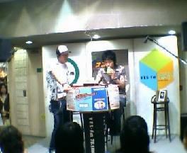
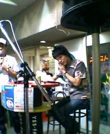
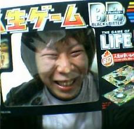

日々、想ふ
〜過去感じたことがつれづれと〜
（できるだけ最大化してお読みください）
過去、想ふ
金太の大冒険。５/３１
なんか名曲らしいです、タケユキです。
またしても蒸し暑い一日。
天気予報の最高気温は３２度、
広島の２２度と１０度の差。なんなんだいったい。
かと思えば夕方からは一転して冷え込み
体調崩しそうな不安定な天気でした。
中、四国はもうすでに梅雨入り、
これから昨日今日以上に蒸し暑くなると思ったら
ゆううつここに極まれりって感じですか。
今日の勉強会：やっぱり形だけ。
蒸。５/３０
もうほんと勘弁、タケユキです。
なにこの蒸し暑さは。
俺の部屋は風通しが悪いらしく
朝起きた時からかなりの温度＆湿度。
というわけで今日は避暑をかねて
意味もなく外を徘徊してました。
ってか来週からテストが一つ二つあるから
勉強しないといけないのに・・
明日からマジメに勉強することを誓います
。
あ、明日も教習あるわ。
明後日から・・・。
今日の湿度：湿度１００％は水中の事だと思ってた時代が誰しもあるはず。
車、車、車。５/２９
教習順調、タケユキです。
今日は初めて自分一人で車に乗った。
担当の先生が無線で指示を出すんで一人で運転。
隣に人がおらんのは気楽でいい。
多少好き勝手運転しても文句言う人いないし
多少飛ばしても文句言う人いない。
それで調子に乗って前の車を追い回してたら
無線で「は〜いもうちょっと車間距離開けようか〜」
軽い口調で怒られた。
でも全体的にちゃんとできてたってほめられた。
この調子でいったら予定通り夏休みまでには免許が取れそう。
最近教習ネタが続きますが書くことないんでその辺はご容赦を。
今日の映画：今日は「パッション」を見た。
狭路。５/２８
今日のパソコンの授業中向かいに座ってるデブ
ふくよかなクラスメイトが
果てしなくうるさかった、しかもかなりの高い声で。
イライラしてきて
「なんでデブってあんなに声高いんかなぁ！」って隣の友達に話したら
向かいが急に静かになりました、
でもたぶん俺のせいじゃないと思う、
たまたまだと思ってます、タケユキです。
今日も学校終わってから車の教習へ。
今日はS字とかクランクの狭路の通行の練習。
楽勝。
もう赤子の手をひねるかのごとく。
担当の先生と世間話をしながらクランクを突破。
脱輪することもなくうまいことやってたら、
何度目かの狭路の通行中、
「ちょっとハンドル借りるよ〜」
助手席から手が伸びてきて言われるままハンドル渡したら
・・・ドンッ、脱輪。
教官のくせにヘッタクソか？って思ったら
「じゃあ失敗した時の練習やってみようか」
わざとだった。
俺よりも何枚も上手だった。
調子に乗ってすいません。
今日のお気に入り：金曜夜は「恋するハニカミ」
母。５/２７
今日は母の誕生日、
わざわざメールでいろいろと催促してきました、
確かに母の日にもなにもあげず、メールすらも送らなかった俺なんで、
催促してきたのもまあ納得です。
でも仕送りしてもらったお金で何か買うのもちょっと違うし、
自分の稼いだお金で買おうも今お金なんてありません。
というわけで開き直って
「こんな立派に息子が育ったのにそれ以上に何を望む？母よ」
返事が返ってきませんでした、タケユキです。
今日もバイトです、あぁ忙しい。
今日の一日：仕送りが止まってしまうんじゃないかと心配です。
猫背。５/２６
坂道発進マスター、タケユキです。
最近猫背を直そうかと思ってます。
高校時代猫背の影響で身長が1.5cm縮んでるし
これ以上人生に悪影響を与えられてたまるかと
たまたまテレビでやってたデューク更家のウォーキング講座見てたら
「猫背矯正」みたいなコーナーやってた。
「目をつむってその場で５０回足踏みしたら、
背骨のゆがんだ方向にゆがんだ分だけ体が向く」らしい。
さっそくその場でやってみた。
１、２・・・・・４８、４９、５０！
目を開くと閉じる前と比べて体が９０度右に。
これはかなりやばい。
「猫背矯正」がテーマなんだからその直し方もやるだろうとテレビを見たら
目をつむって足踏みしてる間に放送が終わってた。
ゆがんでいることしかわかりません。
今日の失態：全てを
学んでから試すべきだった。
ジョン。５/２５
車の運転にほめられた、タケユキです。
昨日麒麟を見たあとバイトに行きました。
予約に１０名個室の宴会の予約が入ってた、
「○○貿易」って会社の名前で。
宴会ってのはたいてい最初に乾杯の挨拶があるけど
さすがは貿易会社、あいさつが英語だった。
ってか食事中の会話が常に英語だった。
そんなに英語は得意じゃないのであんまり分からんかったけど
どうやらお客の一人のジョンのお別れ会みたいだった。
どうやら記念撮影をするような雰囲気になり、
ジョンが俺を呼んだ。
カメラの使い方を英語で俺にレクチャーするジョン、
俺がちゃんと理解できてんのか不安げに見つめる日本人のお客さんたち、
なめんじゃねえ、俺の理解力を。
カメラ見た瞬間使い方分かったわ、英語
理解できずとも。
日本人のお客は俺にドリンクとか注文する時は日本語なんだけど
やっぱりジョンは英語で注文してきた。
「ヘイボーイ、ズィントニック（語尾上げる）」
ジョンはジントニックしか飲まなかった。
頼む時は常に足を組んだままイスをこっちに向け
空になったグラスの中の氷をカラカラさせながら、
「ヘイボーイ、ズィントニック（語尾上げる）」
かっこよすぎだった。
今日の気持ち：「賭博黙示録カイジ」AA(アスキーアート)
, ' ,ヘ.ト、 、..＿ / r‐、ヽ.
/ .／ ,イ/ /`メ.`ヽv::＼ ＼＼r 、ヽ
. / ／/ / !' v/ / , :::＼ ＼ 、リ l
,'／ / .,イ , / l _,/ /!./ ／ ::::＼.ヽ._ノ ・・・なんてこった・・・
. ! / l ,イ ./、.U ＼/ l∠.=;-‐ v u:::::＼'、
|/ |/ W `''‐、,, '~U~ 〜′ :::::::|ヽ. ト. シブイ・・シブすぎる・・・・・
/ u ノ> uj ::::| ヽ | i
. / v ‐， j ／'´ :::|; !. |. ! 真似できねえ・・・・・・！
/ イ ／ v u:::|;; ! | !
. / , ‐'´ノ _,／ u :::|;; |. |.
ー''´ ‾ ＼_／｀! u v::|;;; | | |
|
麒麟。５/２４
タケユキです。
というわけで今日買い物行った帰りに梅田をうろうろしてたら
エストで人だかりを見つけた。
麒麟だった。

ラジオの公開生放送みたいだった。
俺はどっちかっていうと川島さんの方が好き。

麒麟っていったら漫才始める時に川島さんのやる、
「麒麟です！」（文字じゃ表現できないのが残念）
を果てしなく愛して止まないわけですが
見てるときは残念ながらやってくれなかった、
まあラジオしてるんだから無理か。
そういえばこっち来て一年経ったのに
まだ一回もNGKやベースよしもとに行ってない（入り口までは行ったけど）。
劇団四季なんて言ってる場合じゃない！今は吉本の時代だ！
今日の買い物：去年１０月に貸した靴がまだ帰ってこない。
普通。５/２３
「トロイ」見ました。
確かにブラピはかっこえーわ、タケユキです。
今日もバイト、結婚式の二次会のバイト。
でも今日の二次会はいつものとちょっと違った。
ふつうの宴会っぽくやりたい、と。
普通に騒いで飲んで食ってビンゴとかやりたいと。
でも宴会開始の時間になっても新郎新婦が現れない。
司会の方が「時間なんで食事始めときましょう」って言ったんで
料理出すことになった。
それから少ししてもまだ表れない。
そしたら司会の方が、
「まだ新郎新婦現れませんが、
先にビンゴ始めましょう」
ちっとも普通の宴会じゃない。
今日の宴会：主役はおらずとも会は進む。
音響係。５/２２
もうバイトいや、タケユキです。
俺は結婚式の二次会みたいなとこでバイトしてるんですけど
最近音響係やるようになりました、
入場、ケーキ入刀、乾杯とか場面に合わせて音楽を流す役。
音なもんでタイミングとか間違えるとバレバレな役だし
場の空気にモロに影響するんでかなり神経使います。
司会の人とかを気をつけて見てないといけません。
今日はたまたま隣に先輩が来て、
「あたしが合図出すからこっち見てて」って言われました。
今日は会の流れとかいつもと違うんかなぁとか思いながら
言われた通りに先輩の方見てたら
先輩司会の人のとこかどこかに消えてった。
いつもなら音楽流すとこになっても先輩はまだ現れない。
勝手に流していいんかなぁ、でも間違えてたらエラいことだし・・、
そう悩んでたらいきなり先輩が現れた、すごい形相で。
「何ボサッとしとんな、曲流せ！！」
蹴られた。
今日の不満：いくらなんでもそりゃないだろう。
ミッション。５/２１
忙しいって、タケユキです。
今日初めてミッション車に乗った。
・・別もんやね、オートマ車とは全く別の生き物。
発進時の挙動のあやしいことあやしいこと。
オートマ先乗ってたらよけいに難しく感じるっての。
でも初めてのミッション車でエンスト２回ってのは
なかなかなんじゃないかと思います。
少し慣れてきたらギアサードまで入れられるようになった。
やっぱ俺天才かもしれません。
今日の体調：眠くてたまりません。
オートマティック。５/２０
いやぁ、銭金おもしれー、タケユキです。
今日も教習行ってきました！（ここからラップ調で読んでください）
ついに初の実車に乗車！
気分は緊張、でも高潮！
後方確認、いざ発進！（ここまで）
というわけで車を運転してきました。
おもれーね、車って。
ってか俺うめえ、F1ドライバーも目じゃないって感じ。
今日なんか最初ってことでオートマ車乗ったんだけど、
教習所の直線コースで３０kmとか出しちゃったしね。
隣に座ってた教官なんて途中足組んで
３０分ばかし熱く釣りの話をしだす始末。
あげくの果てに、
「去年の夏こんくらいのタイ釣ったんやって〜」
両手で魚の大きさをジェスチャーし始める。
よそ見しなきゃ見れねえって。
今日の教習：明日からミッション車です。
声が聞きたかっただけ。５/１９
「どうしたよ？」
「ううん、声聞きたかっただけ」
そんな刺激的な一日でした、タケユキです。
今日は友達のパソコン選び＆デジカメ選びを手伝いに梅田へ行った。
それから自宅でパソコンの講習会、
焼肉、ゲーム大会へとダラダラと流れ込んでいきました。
なんか友達がパソコン買うたびに俺がセッティングしてるんで
サークル周りでは俺のパソコンの分身がどんどん増えていきそうです。
そんな感じで今日は
プルルルルル・・ピッ、
「どうしたよ？」
「ううん、声聞きたかっただけ」
な一日でした。
今日の電話：小さなことでも有頂天になれる人間なのです。
シミュレーターと僕。５/１８
先月末の学祭にうちの母校の２年生が大学見学で見に来て、
その時高校の時の担任に写真を撮ってもらったって話を書いたんですが、
母校のHPに掲載されてから何人からか
「HPなんかに載ってんじゃねーよ」みたいな
メールとか（なぜかみんな調子乗んなよ的なメール）もらってたんだけど、
昨日ついに
母からもメールがきました。
「なんかタケユキの写真がHPに載ってるらしいよ」
情報化の波とは恐ろしいものです、タケユキです。
今日から車の免許の技能教習が始まった。
っていってもゲーセンのレースゲーみたいなやつに乗る
シミュレーターってやつだったんだけど。
学科教習が果てしなくつまらないものだってのはわかってきたんで
ちょっと楽しみにしてた今日の技能教習、
実際の車にはまだ乗れないにしても教習で
ゲーセンみたいな感覚で
人をひける運転できるってのは
なんとも面白そうで楽しみにしてたんだけど、
いざ始まってみると技能でもなんでもない。
ただ座席が車のシートになっただけで
結局はビデオ見るんじゃん。
そうはいってもまあハンドル操作とかアクセルとか
ギアチェンジも
ちょっとは習ったんだけど。
しかしこのシミュレーターは難しいもんで。
アクセルとか
踏んでも画面には何の反映もされんから
どのくらい踏み込んでいいんか分からんくて、
「では３０kmくらいにスピードを保ってください」の指示が出たとき
すでに俺の車は７０kmオーバー。
ってか３０kmって原付の出すスピードじゃん。
３０kmでいいなら原付乗れって。
７,８０kmくらい楽勝で出してそれは初めて車なんじゃないかと。
と思うのはたぶん車初心者の俺だけなんでしょうけども。
そんな感じでダラダラ過ごして教習終了。
次からは実車なんでやっと俺の本領発揮なんではなかろうかと
巷ではもっぱらの噂です、楽しみだ。
今日のレポート：
グラフは鉛筆で書いていいなら先に言え。
人生ゲームと僕。５/１７
負けたねえ、隊長足手まといでごめんよ（私信）、タケユキです。
今日もバイトがあったんだけどけっこう早めに終わったんで
最初参加は無理であろうと思ってた「たこやきの会」（？）に行った。
行く前に聞いてた話ではたこやき作ろうって話だったと思うんだけど
到着したころにはなんでかしらんけどみんなで人生ゲームやってた。
多少不思議に思いながらも懐かしさ満開の人生ゲーム、やってみた。
二人一組のチーム戦だった。
余裕の大敗だった。
優勝したところが「９０万だー！」みたいなことほざいてた騒いでて、
２位、３位も３０万とかいってるのに
なぜかうちはマイナス４万。
要所要所でこれでもかと「○○はらう」みたいな
桃鉄でいう赤マスに止まりまくった、
ほとんど俺がルーレット回したときに。
ごめんよ、ザキングオブアシデマトイで。
ごめんよ、こんなので。
今日のこんなの：
休み。５/１６
髪ちょっと染めました、タケユキです。
今日も昨日と同じような感じでした、
昼起床、バイト、夜帰宅で一日終了。
バイトの結婚式の二次会も平凡な二次会。
夜には雨やんでたんだけども
そのせいで蒸し暑い夜になりそうです。
今日の一言：休日＝睡眠、バイト。